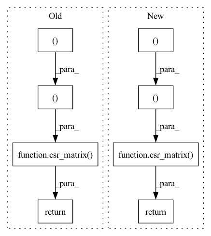

Pattern ID :8545

Before Change
users = to_numpy(log, "user_idx")
items = to_numpy(log, "item_idx")
relevance = to_numpy(log, "relevance")
return csr_matrix((relevance, (items, users)))
def to_numpy(log: DataFrame, col: str) -> np.ndarray:
After Change
[0, 2]], dtype=int64)
df = log.select("user_idx", "item_idx", "relevance").toPandas()
return csr_matrix((df.relevance, (df.item_idx, df.user_idx)))
In pattern: SUPERPATTERN
Frequency: 3
Non-data size: 8
Instances
Fragment ID: 29725509
Project Name: sb-ai-lab/replay
Commit Name: 11d2dcf0cc56cfcbaee2c35e801681acf6757d9a
Time: 2020-05-07
Author: yytamm@sberbank.ru
File Name: sponge_bob_magic/utils.py
M Class Name: AnonimousClass
N Class Name: AnonimousClass
M Method Name: to_csr(1)
N Method Name: to_csr(1)
M Parent Class:
N Parent Class:
M File Name: sponge_bob_magic/utils.py
N File Name: sponge_bob_magic/utils.py
M Start Line: 277
M End Line: 280
N Start Line: 277
N End Line: 278
'>
Before Change
[0, 2]], dtype=int64)
data_frame = log.select("user_idx", "item_idx", "relevance").toPandas()
return csr_matrix(
(
data_frame.relevance,
(data_frame.item_idx.astype(int), data_frame.user_idx.astype(int)),
)
)
After Change
col_count = int(
item_count if item_count is not None else pandas_df.item_idx.max() + 1
)
return csr_matrix(
(pandas_df.relevance, (pandas_df.user_idx, pandas_df.item_idx)),
shape=(row_count, col_count),
)
'>
Fragment ID: 29725508
Project Name: sb-ai-lab/replay
Commit Name: b87b016dcd59de396c49fab931fd6337c72ff16c
Time: 2020-05-15
Author: Shminke.B.A@sberbank.ru
File Name: sponge_bob_magic/utils.py
M Class Name: AnonimousClass
N Class Name: AnonimousClass
M Method Name: to_csr(3)
N Method Name: to_csr(1)
M Parent Class:
N Parent Class:
M File Name: sponge_bob_magic/utils.py
N File Name: sponge_bob_magic/utils.py
M Start Line: 171
M End Line: 191
N Start Line: 172
N End Line: 203
'>
Before Change
users = to_numpy(log, "user_idx")
items = to_numpy(log, "item_idx")
relevance = to_numpy(log, "relevance")
return csr_matrix((relevance, (items, users)))
def to_numpy(log: DataFrame, col: str) -> np.ndarray:
After Change
[0, 2]], dtype=int64)
df = log.select("user_idx", "item_idx", "relevance").toPandas()
return csr_matrix((df.relevance, (df.item_idx, df.user_idx)))
'>
Fragment ID: 29725510
Project Name: sb-ai-lab/replay
Commit Name: d64dec49c52992118860248b7aba033c903c12b9
Time: 2020-04-30
Author: yytamm@sberbank.ru
File Name: sponge_bob_magic/utils.py
M Class Name: AnonimousClass
N Class Name: AnonimousClass
M Method Name: to_csr(1)
N Method Name: to_csr(1)
M Parent Class:
N Parent Class:
M File Name: sponge_bob_magic/utils.py
N File Name: sponge_bob_magic/utils.py
M Start Line: 277
M End Line: 280
N Start Line: 277
N End Line: 278